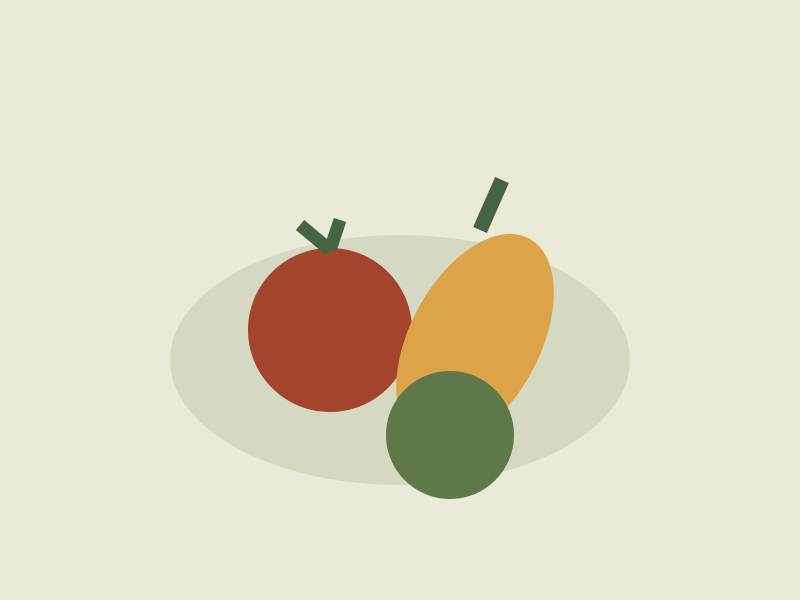

Gambar untuk
cerita sehari-hari.
Lila / Ilustrator konsep
Bentuk geometris, warna terbatas.

Pekan Warna
Poster · Eksplorasi bentuk

Tiga Ruang
Editorial · Komposisi lengkung

Jalur Pulang
Ilustrasi lanskap · Studi warna

Isi Meja
Produk · Studi benda sehari-hari
Tentang penggunaan ilustrasi
Ilustrasi dalam repositori ini dibuat dengan SVG asli dan tersedia sesuai lisensi proyek. Nama seniman dan proyek merupakan profil fiktif.